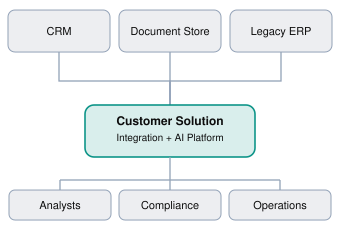
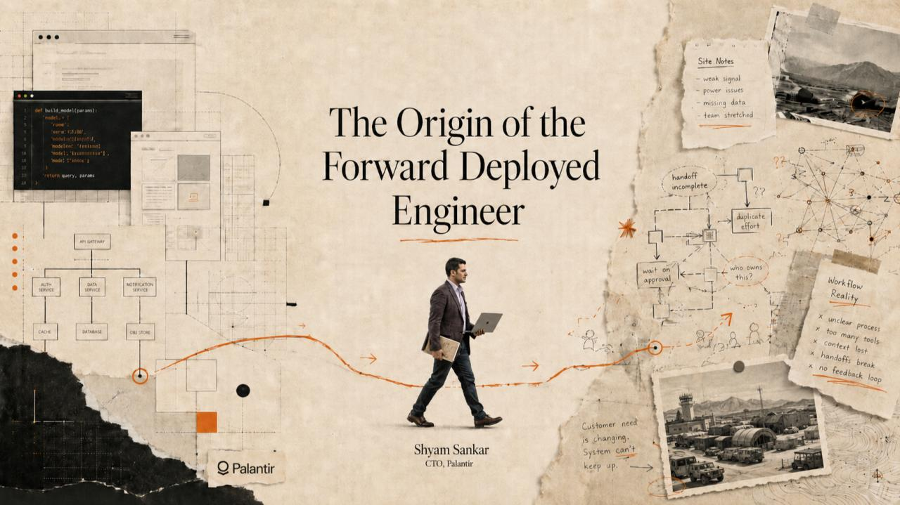

Chapter overview
Imagine you're a software engineer working at a technology company. Your team has built a powerful product, but one of your largest enterprise customers can't use it effectively.
The product works. The documentation is comprehensive. The APIs are functional.
Yet the customer is struggling.
Their data is scattered across multiple systems, their security team has concerns, their workflows don't match your product's assumptions, and their leadership expects results within six weeks.
A traditional software engineer might be tasked with building a new feature to address one of these problems.
A Forward Deployed Engineer approaches the situation differently.
They work directly with the customer, investigate the underlying problems, design a solution using the available technology, write code where necessary, deploy the solution, and help ensure it delivers measurable business value.
That is the essence of Forward Deployed Engineering: combining software engineering expertise with direct ownership of real-world customer problems.
By the end of this chapter, you'll understand what FDEs do, why companies employ them, how the role differs from traditional software engineering, and whether this career path is right for you.
1.1 Defining the FDE role
A Forward Deployed Engineer (FDE) is a technical professional who works closely with customers to design, build, integrate, and deploy software solutions in their real operating environments.
The term forward deployed reflects the idea of placing engineers close to where the technology is being used, rather than keeping them exclusively within a centralized product engineering team.
Three characteristics frequently distinguish FDEs:
Customer proximity: They interact directly with the people experiencing the problem.
Engineering ownership: They can design and implement technical solutions, rather than only recommend them.
Outcome orientation: Success depends on whether the solution works for the customer, not merely whether the code is complete.
An FDE may spend Monday interviewing stakeholders, Tuesday inspecting a customer's APIs, Wednesday implementing an integration, Thursday debugging a deployment, and Friday demonstrating the result to executives.
The role combines technical depth with adaptability and communication.
The three pillars of an FDE
Engineering
Design and build working systems
Customer Context
Understand people and workflows
Business Impact
Deliver measurable outcomes
An engineer who understands the customer's business but cannot build the solution may be more suited to a consulting or product role.
An engineer who writes excellent code but cannot navigate customer ambiguity may struggle in a highly customer-facing FDE position.
An effective FDE develops all three capabilities.
1.2 Why do companies need FDEs?
Enterprise software rarely operates in isolation.
A company purchasing an AI platform, analytics product, or developer tool already has existing infrastructure, legacy systems, business processes, compliance requirements, and organizational constraints.
Consider an enterprise that wants to deploy a document intelligence platform.
Its environment might contain:

Illustrative enterprise integration environmentThe platform vendor may have built excellent software, but integrating it into this customer's environment requires understanding several systems and teams.
The FDE helps bridge that gap.
Their responsibilities might include identifying the right data sources, building connectors, configuring authentication, creating a proof of concept, addressing security requirements, and validating that users can complete their workflows.
The product-to-customer gap
A useful mental model is:
Product capability + Customer environment + Implementation expertise = Usable customer solution
The FDE primarily contributes the implementation expertise and helps align the other two.
This doesn't mean FDEs should customize everything. In fact, an important part of the role is recognizing when a customer requirement should be solved through configuration, a reusable integration, a core product improvement, or a change in the customer's workflow.
1.3 What does an FDE actually do?
Although responsibilities differ between companies, many FDE engagements involve six activities.
01
Discover
Understand the business problem, stakeholders, current workflow, and success criteria.
02
Design
Choose an architecture and define the implementation approach.
03
Build
Develop integrations, services, workflows, prototypes, or product extensions.
04
Deploy
Integrate with the customer's environment and address operational constraints.
05
Validate
Test with users and verify the solution meets technical and business requirements.
06
Iterate
Improve the implementation and communicate reusable product feedback.
These activities aren't always sequential. An FDE may discover new requirements during deployment or revisit the architecture after customer testing.
The key lesson is that FDEs operate across the solution lifecycle, rather than being limited to one engineering task.
1.4 How is an FDE different from a traditional SWE?
Both roles require strong engineering fundamentals. The difference is usually where they focus their attention and how their success is measured.
Dimension | Traditional SWE | FDE |
|---|---|---|
Primary focus | Product or platform capabilities | Customer-specific outcomes |
Main collaborators | Engineering and product teams | Customers, engineering, product, business teams |
Requirements | Often refined through product processes | Frequently discovered directly with customers |
Coding | Core daily responsibility | Core skill, but time varies by engagement |
Success | Quality, reliability, product impact | Adoption, delivery, measurable customer impact |
Ambiguity | Varies by team | Often high |
Deployment | Usually internal product infrastructure | May involve customer environments and integrations |
These are tendencies, not rigid boundaries. Many product engineers work directly with customers, and some FDEs write production code extensively.
Palantir provides a particularly useful distinction: its product engineers focus on capabilities serving many customers, while its forward deployed engineers focus on delivering multiple capabilities for a particular customer.
OpenAI's FDE description similarly emphasizes end-to-end deployments, customer collaboration, production adoption, and feedback that influences product development.
We'll explore the differences between FDEs, Solutions Engineers, Solutions Architects, and technical consultants in Chapter 2.
1.5 Case study: Think like an FDE
Customer scenario
A bank wants to automate document reviews.
A regional bank employs 40 analysts who manually review financial documents. Management believes AI could reduce review time by 70%.
The bank asks your company to build an AI application that reads uploaded PDFs, extracts relevant information, and generates review summaries.
The implementation-first response
An engineer might immediately propose:
Upload documents to cloud storage.
Extract text from PDFs.
Send the text to an LLM.
Generate a structured summary.
Display the results in a web application.
This is a reasonable initial technical hypothesis.
But it leaves important questions unanswered.
What happens when a document contains sensitive customer information? How accurate must the extracted values be? Does the bank require human approval? Are the documents scanned? What happens when the AI produces an incorrect financial figure?
The FDE response
An FDE would first investigate the actual workflow.
Suppose discovery reveals that analysts spend 45 minutes per document, but only 15 minutes involve reading and extracting information. The remaining 30 minutes involve verifying information against internal systems, documenting exceptions, and obtaining approvals.
Suddenly, the original solution looks incomplete.
Automating document summarization alone may save time, but it won't necessarily deliver the bank's expected 70% reduction.
The FDE might instead propose a narrower initial solution that extracts key fields, validates them against existing records, highlights inconsistencies, and routes uncertain cases for human review.
The team could then measure actual time saved and extraction accuracy before expanding the system.
The lesson: An FDE doesn't simply implement the solution the customer requests. They investigate whether that solution will solve the underlying problem.
1.6 Skills that make a successful FDE
Technical problem-solving
Engineering foundation
Discovery and active listening
Understanding what customers actually need, asking useful follow-up questions, and separating symptoms from root causes.
Communication
Explaining technical decisions to engineers, managers, and executives without losing accuracy.
Ownership and adaptability
Managing unclear requirements, unexpected blockers, changing priorities, and the realities of production deployment.
Business judgment
Understanding trade-offs between implementation cost, customer value, risk, and delivery timelines.
You don't need to master every skill before pursuing an FDE role. But you should be comfortable learning outside your usual engineering specialization.
1.7 Recommended learning resources
These resources complement the chapter rather than repeating all its content.

WATCH · REQUIRED · ~3 MIN
The Role of a Forward Deployed Software Engineer
Palantir · 2015
An early firsthand explanation of the role from a company that pioneered the model. Focus on how engineers work directly with users.

WATCH · OPTIONAL · ~31 MIN
Y Combinator · Eric Migicovsky
A practical introduction to understanding customer problems through effective interviews. This will become required material in Module 2.
READ · REQUIRED · ~8 MIN
Palantir: Engineering Role Distinctions
Compare product engineering and forward deployed engineering responsibilities.
READ · OPTIONAL · ~7 MIN
OpenAI: Forward Deployed Engineer Role
See how the FDE model applies to enterprise AI deployment, customer adoption, and product feedback.
1.8 Practical exercise — Your first customer conversation
Exercise 1.1
A logistics company tells you:
"Our shipment tracking dashboard is too slow. We need you to rebuild it using React and a faster database."
You are the FDE assigned to the engagement.
Your task is to write five questions you would ask before proposing an architecture.
Auto-saved on this device. Review your answer for customer impact, evidence, assumptions, ownership, and a clear next step.
Sample FDE questions
Which specific dashboard actions are slow, and how long do they currently take?
When did users first notice the problem?
How many concurrent users and shipments does the system handle?
Have you measured whether the bottleneck is the frontend, database, network, or an external API?
What business impact does the slowness cause, and what performance improvement would count as success?
Notice that none of these questions assumes React or a new database is the right solution.
1.9 Knowledge check
1.10 Chapter summary
The five most important ideas to remember are:
An FDE is a software engineer who works close to customers to deliver technical solutions.
FDEs combine engineering ability, customer understanding, and business judgment.
Understanding the problem is more important than immediately choosing a technology.
Successful deployments are measured by operational and business outcomes, not code output alone.
The FDE role varies between companies, so understanding the specific organization's expectations matters.
NEXT CHAPTER
Chapter 2 — SWE vs. FDE vs. Solutions Engineer vs. Solutions Architect
We'll compare responsibilities, technical expectations, customer interaction, ownership, and career trajectories across these roles.
Field notes
Capture the idea you will use in your next customer conversation.